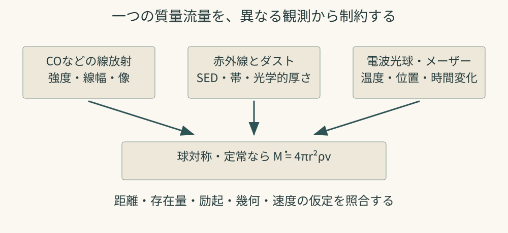
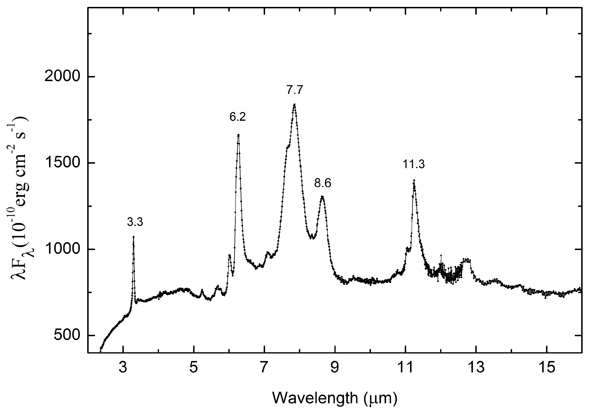
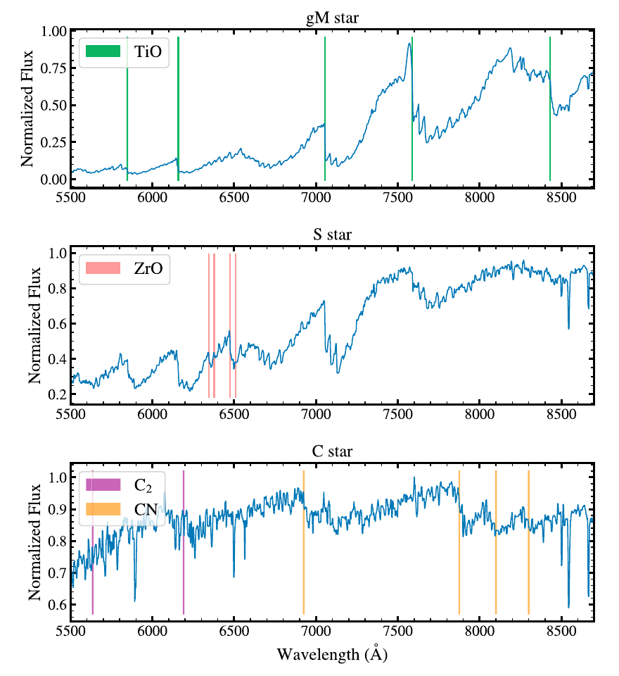
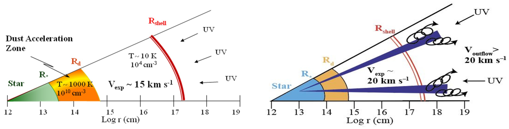

レビュー · 主要レビュー · 詳しい解説
Icko Iben, Jr. & Alvio Renzini (1983)Asymptotic Giant Branch Evolution and Beyond
Annual Review of Astronomy and Astrophysics, 21, 271–342 DOI：10.1146/annurev.aa.21.090183.001415 確認した本文・資料
低・中質量星の晩年を、内部の核燃焼、表面組成、質量放出、白色矮星への移行まで結び付けた古典的総説。まず熱パルスを読むと、ヘリウム殻の急激な燃焼が外側を膨張・冷却させ、水素殻の燃焼をいったん止め、その後の収縮で再点火する循環が分かる。次に、合成された炭素や重元素を表面へ運ぶドレッジアップと、外層を失う速さが、炭素星の寿命や宇宙へ返す元素量をともに左右することを追いたい。特に重要なのは、進化計算を近似式にまとめる「合成AGBモデル」を使い、マゼラン雲の炭素星の明るさ分布と理論を比較する議論である。予測との不一致を内部混合の問題だけに帰さず、質量放出の処方、星形成史、標本の不完全性も検討する姿勢が学べる。第三ドレッジアップを有力な説明としながら、理論が完成したとは主張せず、偏りの少ない分光標本による検証を求める結びも示唆的である。数値的な境界質量や恒星風の駆動像は1983年時点のものとして、HerwigやHöfner & Olofssonの総説と対照して読むとよい。
原文スキャンの関連ページを確認した案内です。数値的な境界や風のモデルは刊行当時のものとして読みます。
レビュー · 主要レビュー · 詳しい解説
Falk Herwig (2005)Evolution of Asymptotic Giant Branch Stars
Annual Review of Astronomy and Astrophysics, 43, 435–479 DOI：10.1146/annurev.astro.43.072103.150600 確認した本文・資料
AGB星の内部で起こる核燃焼と混合を、恒星進化計算の立場から学ぶ標準的な総説。薄いヘリウム燃焼殻が不安定になる「熱パルス」と、合成された物質を表面へ運ぶ「第三ドレッジアップ」を軸に読むと、炭素星が生まれる理由が見えてくる。対流外層の底で水素燃焼が進むhot-bottom burningや、ゆっくりした中性子捕獲で重元素を作るs過程も扱う。重要なのは、核反応が分かっても、物質をどこまで混ぜるかが未確定なら元素収量は一意に決まらない点である。一次元の混合処方と多次元流体計算の関係を読み比べ、モデルの予測と観測的制約を区別する練習に適している。
招待レビュー · 主要レビュー · 詳しい解説
Amanda I. Karakas & John C. Lattanzio (2014)The Dawes Review 2: Nucleosynthesis and Stellar Yields of Low- and Intermediate-Mass Single Stars
Publications of the Astronomical Society of Australia, 31, e030 DOI：10.1017/pasa.2014.21 確認した本文・資料
主系列からAGB終末までをたどり、内部で作られた元素が恒星風で宇宙へ戻るまでを一続きに学べる長編レビュー。「元素収量」は星が放出する各元素の量を表し、表面で測った存在比そのものとは異なる。まず第一・第二・第三ドレッジアップを整理し、次に炭素・窒素・フッ素やs過程元素が、初期質量と金属量によってどう変わるかを読むとよい。対流境界、質量放出、低温不透明度、追加混合を不確実性として独立に扱う構成も有用である。観測された星周分子の同位体比を内部進化に結び付けたい学生に、単一の比だけで出生質量や進化段階を決めないための理論的な足場を与える。
レビュー · 主要レビュー · 確認範囲を付した案内
H. J. Habing (1996)Circumstellar envelopes and Asymptotic Giant Branch stars
The Astronomy and Astrophysics Review, 7, 97–207 DOI：10.1007/PL00013287 確認した本文・資料
星周エンベロープを、ダストの赤外放射と分子の電波放射から読み解く古典的な総説。主に酸素過剰のAGB星を扱い、星の性質と周囲のガス・ダストがどのように対応するかを整理する。公開された詳細概要では、球対称で一定速度の流出を基本像として、温度、分子の生成と破壊、放射による運動量供給、SiO・H₂O・OHメーザーの分布が結び付けられている。学習上は、ダストを押す放射圧が存在することと、単位時間にどれだけ物質が供給されるかを説明することを分けて読むとよい。現在の高分解能画像と比較することで、単純な近似が説明してきた観測量と、さらに複雑なモデルを必要とする現象を考える足場になる。
出版社の詳細概要に基づく主要文献の案内です。本文は今回取得できていません。
レビュー · 主要レビュー · 詳しい解説
Susanne Höfner & Hans Olofsson (2018)Mass loss of stars on the asymptotic giant branch: Mechanisms, models and measurements
The Astronomy and Astrophysics Review, 26, article 1 DOI：10.1007/s00159-017-0106-5 確認した本文・資料
AGB星の質量放出を、観測手法と風の物理モデルの両面から整理した総説である。脈動と対流が作る衝撃波がガスを持ち上げ、冷えた領域でダストが成長し、光の吸収・散乱で得た運動量をガスへ伝える、という連鎖を追う。酸素過剰星と炭素過剰星では、有効な粒子の組成や大きさが異なることにも注意したい。前半の観測手法と後半の風モデルを往復すると、CO線や赤外放射から得る質量放出率が、距離・分子存在量・ダスト特性などの仮定に依存することが分かる。観測と計算が進歩しても、基本的な恒星パラメータだけから放出率を完全に予測できる段階ではないという留保が、研究課題を選ぶ手掛かりになる。
レビュー · 主要レビュー · 詳しい解説
Leen Decin (2021)Evolution and Mass Loss of Cool Aging Stars: A Daedalean Story
Annual Review of Astronomy and Astrophysics, 59, 337–389 DOI：10.1146/annurev-astro-090120-033712 確認した本文・資料
滑らかな球対称風という描像を、三次元の分子・ダスト・塊状構造・伴星の作用へ広げる総説。高分解能観測が示す複雑さを眺めるだけでなく、それを無視すると質量放出率の推定がどう偏るかを考える点に読む価値がある。とりわけ、ダストの種となる分子集合体の形成、局所的な密度の高まり、未検出の伴星による長寿命構造という、異なる大きさの問題を結び付けている。まずHöfner & Olofssonで風を駆動する基本過程を押さえ、その近似がどの観測で破れるかを探す順が分かりやすい。著者が提示する解釈と、複数の観測が直接示す事実を分けて整理すると、多次元化が必要な理由を具体的に理解できる。
総説的会議寄稿 · 主要レビュー · 詳しい解説
Lynn D. Matthews (2024; arXiv 2023)Mass Loss in Evolved Stars Proceedings of the International Astronomical Union, 18(S380), 275–291 DOI：10.1017/S1743921323002788
Matthewsの会議寄稿は、AGB風の駆動を、星の表面から風の出発点を空間・時間の両面で分解する問題として捉える。2023年のarXiv版と2024年の刊行版は同一文献であり、IAU Symposium 380に関連する総説として紹介する。
明るいメーザーの隣にある、暗い熱的な光球
メーザーの位置・速度は大気の動きを細かく調べられるが、励起と増幅に適した場所しか見せない。これに対し、熱的な電波連続波は温度や不透明度が定める光球を調べる。総説は電波光球がおよそ古典的光球半径の2倍程度に位置する標準的な描像を示すが、その値を全星・全波長で一定としない。波長によって見えてくる大気の深さが変わるため、VLAとALMAの観測を組み合わせる意味がある。
VLAの7 mm画像では、近傍AGB星の光球の非球対称性や時間変化が議論される。円からのずれは対流や脈動などと比較できる一方、一時期だけの画像では固定した形と時間変化を区別できない。メーザーの時間系列と連続波の複数時期観測を照合し、同じ層・時期を見ているかを確かめる必要がある。
画像とシミュレーションの間に、観測装置を置く
総説Fig.5のRML法による超解像像は、観測データと再構成法の組合せである。画像の細かい構造を論じるときは、通常のCLEAN像との違い、ビーム、信号対雑音比、正則化の影響を点検する。モデルが細かい構造を予測することと、その構造をデータで識別できることを分けたい。
Fig.6はモデルを現行VLA・将来ngVLAで観測した場合の模擬画像であり、将来装置による観測成果ではない。また放射全体の表面強度モデルを電波の見え方の代理に使うという仮定がある。計画時の仕様・感度・完成時期を現在の確定情報として転記せず、ここでは科学的に必要な空間・時間分解能を考える資料として読む。
風の発生を調べるには、複数の時間尺度が必要になる
三次元大気モデルは対流、脈動、衝撃波を含み、ダストが成長する条件を予測する。質量放出を完全に予測する理論が完成したわけではない。数日から年単位の変化と、恒星周辺の数AU程度の領域を同時に追うことが、モデルの識別へつながる。
原著Fig.3のTX CamのSiO画像は方向による運動の違い、Fig.5は熱的光球、Fig.6は模擬観測という異なる証拠を担当する。三つを同種の「星の写真」として並べないことが、この寄稿を読む要点になる。

Matthews（2024）の解説図 測定量から質量放出率へ進む道筋 Matthews（2024）が扱う質量流量の診断を説明する独立概念図。観測された質量放出率を描いた図ではない。原著図の形や観測データを転写していない。概念の参照：原著 。 図を拡大する ↗ 原著の確認箇所：§§4–9、Fig.3–6。
レビュー · 主要レビュー · 詳しい解説
Dorota M. Skowron & Igor Soszyński (2026)The Role of Long-Period Variable Stars in Observational Astrophysics
Annual Review of Astronomy and Astrophysics, 64, 103–138 DOI：10.1146/annurev-astro-122325-024929 確認した本文・資料
Mira型、半規則型、小振幅の赤色巨星を、大規模な測光観測から整理するレビュー。周期だけでなく、振幅、多重周期、光度曲線の形を調べると、星がどの振動モードで脈動しているかを考えられる。周期光度関係は距離測定に、周期年齢関係は恒星集団の理解に使えるが、化学組成や進化段階の違いを無視して一本の関係を当てはめるべきではない。長い副周期の起源については伴星を含む説明が論じられるものの、確立済みの結論として読まないことが大切である。星周メーザーの周期変動へ進む前に、恒星自身の光度変化と不規則な成分を分け、観測期間が分類や周期検出を左右することを学ぶ教材になる。
レビュー · 主要レビュー · 詳しい解説
Emily M. Levesque (2010)The physical properties of red supergiants
New Astronomy Reviews, 54(1–2), 1–12 DOI：10.1016/j.newar.2009.10.002 確認した本文・資料
赤色超巨星（RSG）の温度と光度をどう測るかを学ぶレビュー。AGB星と同じく低温で大きな赤い星に見えても、RSGはより大質量の星の進化経路に属し、内部構造や最終運命が異なる。本文では、拡張した大気をモデルで扱う難しさ、分子吸収を使う温度推定、星周ダストによる減光、金属量の異なる銀河との比較を通じて、HR図上の位置がどれほど測定法に依存するかが分かる。VY CMaなどの特異な例は、一般的なRSGの性質をそのまま代表するとは限らない。観測値と進化トラックの不一致を見たとき、理論だけでなく温度・距離・吸収の推定も吟味する姿勢を身に付けられる。
レビュー · 主要レビュー · 詳しい解説
Jacco Th. van Loon (2025)Red Supergiant Mass Loss and Mass-Loss Rates
Galaxies, 13(4), 72 DOI：10.3390/galaxies13040072 確認した本文・資料
RSGの質量放出率を、さまざまな観測指標と経験式から検討する総説。単一の「最良の公式」を選ぶ記事ではなく、何を測り、どの換算係数を仮定したかによって放出率が変わることを学ぶ文献として読みたい。ダスト放射からガスの流量へ換算する問題や、密度の高い拡張大気と実際に逃げる恒星風を区別する必要性が、とくに重要である。強い質量放出の一時期がすべてのRSGに共通するのか、連星相互作用がどれほど寄与するのかも問いとして残る。AGB風の描像をRSGへ無条件に移すことを避け、大質量星の最終進化と超新星前の星周環境を考える際の観測上の注意を整理できる。
補助文献・関連研究（15件・開閉） 内部進化・炭素星・元素合成 レビュー · 補助文献 · 確認範囲を付した案内
M. Busso, R. Gallino & G. J. Wasserburg (1999)Nucleosynthesis in Asymptotic Giant Branch Stars: Relevance for Galactic Enrichment and Solar System Formation
Annual Review of Astronomy and Astrophysics, 37, 239–309 DOI：10.1146/annurev.astro.37.1.239 確認した本文・資料
AGB星のs過程を、恒星の元素組成、隕石中のプレソーラー粒子、太陽系の同位体分布へ結ぶ古典。二つの中性子源と、炭素13に富む領域を作る混合の不確実性に注目すると、核物理と恒星内部の役割を分けて理解できる。
書誌・公開概要を照合した短い案内です。本文の詳細な検討は本ガイドでは行っていません。
レビュー · 補助文献 · 確認範囲を付した案内
Carolyn L. Doherty, Pilar Gil-Pons, Lionel Siess & John C. Lattanzio (2017)Super-AGB Stars and their Role as Electron Capture Supernova Progenitors
Publications of the Astronomical Society of Australia, 34, e056 DOI：10.1017/pasa.2017.52 確認した本文・資料
炭素燃焼を経験するsuper-AGB星を扱い、白色矮星になる場合と電子捕獲超新星へ進む場合の境界を整理する。境界質量は固定値ではなく、組成、対流、核反応率、質量放出、連星進化に左右されることを学べる。
レビュー · 補助文献 · 確認範囲を付した案内
George Wallerstein & Gillian R. Knapp (1998)Carbon Stars
Annual Review of Astronomy and Astrophysics, 36, 369–433 DOI：10.1146/annurev.astro.36.1.369 確認した本文・資料
炭素星の分類、光度、化学組成、ダストと質量放出を広く扱う古典。炭素に富む星をすべて同じ進化段階と考えず、通常のAGB炭素星と特殊な亜型を区別して読むための観測的背景を与える。
書誌・公開概要を照合した短い案内です。本文の詳細な検討は本ガイドでは行っていません。
レビュー · 補助文献 · 確認範囲を付した案内
Oscar Straniero, Carlos Abia & Inma Domínguez (2023)The carbon star mystery: 40 years later: Theory and observations
The European Physical Journal A, 59, article 17 DOI：10.1140/epja/s10050-023-00926-8 確認した本文・資料
炭素星の観測された光度分布と進化計算の不一致を、40年間の進歩から見直す。第三ドレッジアップを導入して問題がすべて解決したわけではなく、その効率と元素収量には対流・質量放出の不確実性が残ることを示す。
レビュー · 補助文献 · 確認範囲を付した案内
Maria Lugaro, Marco Pignatari, René Reifarth & Michael Wiescher (2023)The s Process and Beyond
Annual Review of Nuclear and Particle Science, 73, 315–340 DOI：10.1146/annurev-nucl-102422-080857 確認した本文・資料
s過程を中性子捕獲による元素合成の広い枠組みに置き、AGB星と大質量星の寄与を整理する。恒星分光と隕石の実験分析を結ぶ内容で、核反応データと天体内部の不確実性を並べて考える補助教材になる。
星周ガス・質量放出の古典 レビュー · 補助文献 · 確認範囲を付した案内
Lee Anne Willson (2000)Mass Loss from Cool Stars: Impact on the Evolution of Stars and Stellar Populations
Annual Review of Astronomy and Astrophysics, 38, 573–611 DOI：10.1146/annurev.astro.38.1.573 確認した本文・資料
質量放出則を恒星進化へ組み込む際の問題を扱う。観測から得た経験式には標本の選択効果が入り、式が示す相関を駆動機構そのものとみなせない。質量放出率の処方が最終的な核質量や集団の予測へ及ぼす影響を考える入口になる。
分子化学とダスト レビュー · 補助文献 · 確認範囲を付した案内
Thomas Henning (2010)Cosmic Silicates
Annual Review of Astronomy and Astrophysics, 48, 21–46 DOI：10.1146/annurev-astro-081309-130815 確認した本文・資料
珪酸塩ダストの性質を、主に赤外分光の観点から整理する。対象はAGB星に限らないが、酸素過剰星のダストを学ぶ基礎になる。赤外の特徴から粒子の組成や構造を考えるための背景知識を補える。
書誌・公開概要を照合した短い案内です。本文の詳細な検討は本ガイドでは行っていません。
ミニレビュー · 補助文献 · 詳しい解説
Ester Marini & Silvia Tosi (2025)Mass-loss and silicate production in oxygen-rich AGB stars: current understanding and open questions
Frontiers in Astronomy and Space Sciences, 12, 1581269 DOI：10.3389/fspas.2025.1581269 確認した本文・資料
酸素過剰AGB星がどれだけ珪酸塩を供給するかを、質量放出率とダスト収量の不確実性から考える短い総説。粒子成長と風の密度が結び付くため、ダスト生産量を恒星進化計算から予測する難しさを整理できる。
赤外線の帯は、粒子と放射輸送の両方を映す
原著Fig.1は、酸素過剰AGB星SSID165のSpitzerスペクトルと、post-AGB星HD 179821のISOスペクトルを比べる。非晶質珪酸塩の9.7・18 μm付近の広い特徴や、結晶質成分の帯が読みどころになる。ただし、異なる天体を並べた図であり、一個の星の時間発展を直接追ったものではない。
同じ物質でも温度や光学的厚さによって帯が放射・吸収として現れる。帯の強さから粒子量を求め、さらにガスの質量放出率へ換算するには、粒子の光学定数、組成・粒径、ガスとダストの比、距離、流速などが必要になる。赤外線の色から放出率を直接測った、と省略しない。
一つの処方を変えると、最後に残るダスト収量も変わる
総説Fig.2はMariniらの2023年研究をもとに、初期質量4・5・6太陽質量のモデルについて、質量放出率とダスト生産率の時間変化を比較する。Blöcker型とVassiliadis & Wood型の処方の違いが、末期の密度、粒子成長、放出の継続時間へ伝わる。
論文中の約3倍という差は、特定のモデル比較・段階・収量に関する結果である。観測から全AGB星の放出率が一律に3倍と測定された、という意味ではない。核合成・混合がC/Oを変えることもダスト組成に影響するため、風、粒子成長、内部進化を切り離して最良の公式を選ぶことは難しい。
観測に近い量 物理量へ換算するときの仮定 検証したい別の情報 スペクトルと帯の形 温度、光学定数、粒径、幾何 広帯域SED、空間分解画像 ダストの光学的厚さ 距離、速度、ガス／ダスト比 CO線、距離測定 時間積分したダスト収量 質量放出処方と進化時間 星団・銀河の標本、末期AGB星
原著の確認箇所：§§2–5、Fig.1・2。
総説 · 補助文献 · 詳しい解説
Sun Kwok (2025)Chemical Synthesis in the Circumstellar Environment Galaxies 13(2), 36 DOI：10.3390/galaxies13020036
Kwokの2025年総説は、進化星の星周空間で作られる分子・固体を、天体分類と赤外分光の両面から論じる。特に未同定赤外放射（UIE）帯の担体として、混合芳香族・脂肪族有機ナノ粒子（MAON）を提案する立場を明確に示す。観測された帯と、その担体の仮説を分けて読むことが大切である。
よく似たスペクトルは、同じ進化段階を保証しない
コンパクトPN、B[e]星、円盤を持つ連星は、放射線や赤外超過など似た特徴を示す場合がある。しかし、電離した外層からの放射と、降着円盤・連星相互作用に関係する放射は同一ではない。著者は、SEDだけでなく光度、中心星、空間構造、X線などを照合する必要を論じる。
Red Rectangleも、よくproto-PNと呼ばれる一方で、円盤連星としての性質と推定光度がその単純な分類を難しくする。写真の形や赤外超過だけで、AGBからPNへ向かう単独星と確定しない点は、post-AGB連星の解説にもつながる。

Kwok（2025） 原著図1 観測された赤外線の帯と、その担体の仮説を分ける Sun Kwok (2025), Fig.1. © 2025 the author. ISO観測スペクトル。 原典 ／ CC BY 4.0 。可逆WebPへ形式変換。図の内容・軸・色・構成は変更していない。 原寸で図を拡大する ↗ PAHとMAONは、何を説明しようとしているか
PAH仮説は、多環芳香族炭化水素に関係する振動で帯を説明する。MAON仮説は、芳香族の部分と脂肪族の鎖などが混在し、場合によってN・O・S等も含む非晶質の三次元粒子を考える。この総説はMAONを支持する論点を述べるため、分野全体の最終的合意を代弁する文献としては扱わない。
実験室で星周条件を模した有機物を作れることは、反応が可能であるという手掛かりになる。しかし、その実験生成物が天体の主要な担体であると決めるには、帯の相対強度・幅・励起・環境変化などを同時に説明する必要がある。原著Fig.2のMAONは候補構造の例であり、宇宙でその形が直接撮影・同定された図ではない。
星から太陽系へ、という接続の証拠の強さ
AGB・post-AGBの短い時間尺度でも有機物が作られ得るという議論は、星間空間への物質供給を考える上で重要である。プレソーラー粒子の同位体的証拠は、一部の固体が太陽系以前の星に由来することを示す。一方、彗星・隕石中の複雑な有機物すべての起源が星周合成と確定したわけではない。生成、星間空間での生存、太陽系への取り込みは別々に検証する段階である。
NGC 6302の既存記事 は、特定の星雲でのPAHに関係する観測・解釈を担当する。この紹介はその内容を繰り返さず、帯の担体を議論するときの仮説と証拠の関係を補う。
原著の確認箇所：§§2–7、Fig.1・2。
標本選別と赤色超巨星 レビュー · 補助文献 · 詳しい解説
Hai-Ling Lu, Yin-Bi Li, A-Li Luo, Zhi-Qiang Zou, Xiao-Ming Kong, Zhen-Ping Yi, Hugh R. A. Jones, Jun-Chao Liang & Shuo Li (2025)A review of the search for AGB stars
Frontiers in Astronomy and Space Sciences, 12, 1587415 DOI：10.3389/fspas.2025.1587415 確認した本文・資料
測光の色、分子吸収、変光、機械学習によるAGB星の選別法を比較する。研究対象を集める段階で、分類の成功率と標本の完全性を分けて考える教材になる。物理の入門総説を読んだ後、観測標本を作る学生に勧めたい。
分光・測光・変光は、違う失敗の仕方をする
M・S・C型の低温星では、TiO、ZrO、C₂・CNなどの分子帯が化学型を見分ける手掛かりになる。C/Oの違いに敏感な分子吸収を分光で調べる一方、広帯域の色は大量の候補を効率よく選べる。赤外線はダストに隠れた対象にも有効だが、減光、星周ダスト、背景天体などが色を変える。
大振幅・長周期の変光はAGB星を探す有力な情報だが、観測間隔や期間、検出限界によって周期・振幅の推定は変わる。すべてのAGB星が同じ振幅を持つわけではない。S型星でも、内部で合成した元素が表面へ来た場合と、伴星から物質を受け取った場合を分ける必要があり、化学型と進化段階を同義にしない。

Luほか（2025） 原著図2 分子の吸収帯から、低温星の化学型を読む Lu et al. (2025), Fig.2. © 2025 Lu, Li, Luo, Zou, Kong, Yi, Jones, Liang and Li. LAMOST低分散スペクトルライブラリのデータ。 原典 ／ CC BY 4.0 。原著PDFから図の領域を抽出してWebP化。図内の軸・凡例・パネル・内容は変更していない。 原寸で図を拡大する ↗ 機械学習の正解率だけを見ない
総説はS型星・炭素星の探索例を通じ、特徴量を使う分類器とスペクトルを入力する深層学習を紹介する。学習標本に既に偏りがあれば、分類器はその偏りも受け継ぐ。既知の対象をよく当てる性能と、未知・低品質・強く減光した対象まで回収できる性能は同じではない。
候補のうち正しい天体が何割かという純度と、本当の対象を何割拾えたかという完全性を分け、独立した分光標本や別のサーベイで検証したい。解釈可能性の分析は、分類器が物理的な分子帯を使っているか、それとも観測条件の違いを利用しているかを点検する助けになる。
原著の確認箇所：§§2–5、Fig.2・6。
レビュー · 補助文献 · 詳しい解説
Alceste Z. Bonanos (2025)Red Supergiants in the Milky Way and Nearby Galaxies
Galaxies, 13(3), 66 DOI：10.3390/galaxies13030066 確認した本文・資料
天の川と近傍銀河のRSGをどう同定するかを整理する。色、分光、Gaiaの位置天文情報、変光を組み合わせ、前景星やAGB星の混入を除く手法が分かる。大きな標本から連星率や減光現象を研究する際の導入になる。
色だけでは、赤い星の正体は決まらない
低温の星は赤く見えるが、前景の矮星、赤色巨星、AGB星も含まれる。近赤外の色等級図、可視光の色や分光、Gaiaの固有運動と視差、変光の情報を組み合わせて混入を減らす。総説Fig.1の小マゼラン雲の境界は、その銀河の距離・金属量・標本に対する選別であり、他の環境にそのまま適用する普遍的な線ではない。
可視光で暗い、赤外超過が強い、分光の確認が難しいといった性質は、観測対象に選ばれる確率を変える。総説Fig.2のASSESS標本も、赤外超過を持つ対象を優先した選別を含む。そこで極端な星が目立つことと、RSG全体の大部分が極端な星であることは異なる。標本の完全性、混入率、観測可能な範囲を分けて読む必要がある。
減光・連星・集団の年齢を結ぶとき
Betelgeuse以外にも大きな減光を示すRSGがあり、総説は[W60] B90などの光度曲線を比較する。ダスト、光球の温度・構造、視線方向が明るさへ影響し得るため、似た減光形状だけで共通の原因を確定しない。複数バンドの測光やスペクトルと組み合わせることが重要になる。
RSGの伴星探索では、青い高温伴星の寄与を見つける方法と、長期の視線速度を追う方法が異なる対象を選ぶ。検出された連星率は、伴星質量・周期・観測期間に依存する。若い集団で単独星進化から期待するより明るい「赤色はぐれ星」は、過去の質量獲得や合体の候補だが、光度分布の幅を連星効果だけで説明できるかは未解決である。
測定・選別 得られる手掛かり 残る偏り 色等級図と分光 低温・光度階級・候補集団 減光、金属量、AGB混入 視差・固有運動 距離と銀河への所属 距離誤差、遠方・暗い星の不完全性 変光と長期分光 減光、脈動、軌道運動 観測期間と伴星の検出しやすさ
Fig.1・2・5は別論文からの再掲であるため、ここでは転載せず、原著の図とキャプション を案内する。既存のvan Loon (2025)の解説が担当する「質量放出率の換算」は繰り返さず、標本を作る段階の偏りに焦点を置いた。
原著の確認箇所：§§2–6、Fig.1・2・5。手元PDFのページ下部の異なるDOIを採らず、出版社のgalaxies13030066を使用。
レビュー · 補助文献 · 確認範囲を付した案内
Schuyler D. Van Dyk (2025)Red Supergiants as Supernova Progenitors
Galaxies, 13(2), 33 DOI：10.3390/galaxies13020033 確認した本文・資料
爆発前の画像からRSGの前駆星候補を探し、その光度やダスト量を推定する方法を扱う。位置の一致だけで同定を完了せず、爆発後に候補星が消えたかを確認する必要性など、証拠の強さを評価する姿勢を学べる。
レビュー · 補助文献 · 詳しい解説
Lucy M. Ziurys & Anita M. S. Richards (2025)Molecules and Chemistry in Red Supergiants
Galaxies, 13(4), 82 DOI：10.3390/galaxies13040082 確認した本文・資料
VY CMaやNML CygなどのRSGの分子化学を扱う。酸素過剰という共通性に加え、局所的な放出、衝撃波、ダスト破壊が異なる化学環境を作ることに注目したい。メーザーだけでなく熱的分子線を読む背景を補える。
同じ星の周囲でも、分子は同じ場所にいない
著者らは電波・ミリ波の分光と干渉計画像を軸に、RSGの分子種、存在量、空間分布、同位体、メーザーを整理する。特に資料が豊富なのはVY CMaとNML Cygで、普通のRSGを無作為に集めた標本ではない。分子の検出リストは2025年までの報告をまとめたもので、発見が進む中での最終的な総数ではない。
原著Fig.8では、AlO・AlOHが中心付近に集中する一方、NaClやSiSは南西の塊も示し、SO・SO₂はさらに広がる。Fig.9では、POが中心に強く集中するのに対してPNは南西へ伸び、NSや一部のダスト構造との対応が見える。ここで比較しているのは特定の遷移の放射である。輝度は存在量だけでなく温度、密度、励起、光学的厚さ、観測ビームにも依存するため、明るい領域をそのまま「分子が多い領域」と呼ぶことはできない。
干渉計だけでは広がった放射を取りこぼすことがある。総説のFig.8・9はALMAと単一鏡SMTを組み合わせた画像で、空間スケールの違いを補っている。同じ角尺度で地図を並べる意義と、遷移・強度スケールが異なる地図の限界を一緒に押さえたい。
平衡化学を出発点に、局所的な衝撃波を考える
高温・高密度の内側では、局所熱平衡（LTE）に近い条件で作られる分子を考えることが出発点になる。反応時間が流れで環境が変わる時間より長くなると、反応が追いつかず組成が変わりにくくなる。ここでいう組成の「凍結」は、分子が粒子表面へ付着することとは区別する。さらに外側では紫外線による光化学が重要になる。ただしRSGでは、一方向への突発的放出が衝撃波や密度差を作り、この半径だけの整理を崩し得る。
著者らは、中心付近のPOと、より離れた構造にも現れるPNの違いを、放出に伴う化学の手掛かりと読む。衝撃波がダストからリンを戻し、その後の反応を促す可能性が議論されるが、特定のリン含有固体が直接同定されたわけではない。PNの分布との対応は観測、ダスト破壊からPN形成までの経路は解釈として区別する。

Ziurys & Richards（2025） 原著図11 半径による化学の整理と、それを乱す局所的な放出 Ziurys & Richards (2025), Fig.11. © 2024 the authors. 原典 ／ CC BY 4.0 。可逆WebPへ形式変換。図の内容・軸・色・構成は変更していない。 原寸で図を拡大する ↗ 同位体とメーザーが加える情報
同位体比は、内部の核反応や混合を探る別の窓になる。ただしスペクトル線の比は、そのまま原子核の存在比ではない。光学的厚さ、励起、空間分布が異なる成分を比較する効果を調べてから、内部進化と照合する必要がある。総説の存在量表も、全対象を同じ手法で導いた均質な測定とは限らない。
メーザーは狭い励起条件と速度のそろった視線を選び、熱的分子線はより広いガス成分を調べる。両者の分布や速度の一致・不一致は有益だが、明るいメーザー輝点が星周質量の大部分を表すわけではない。偏波から磁場を推定する際にも、飽和や励起の異方性を検討する。
原著Fig.8・9は科学的に重要だが、既発表図・当時投稿中の研究・HST写真を含む構成要素の権利確認が完了していないため、この紹介には転載していない。原著Fig.8 とFig.9 を、上記の読図上の注意とともに参照してほしい。
次の観測で何を区別したいか
同じ天体を複数の分子・励起準位・時期で調べれば、温度の違いだけで分布を説明できるか、別の化学経路が必要かを比較できる。VY CMaで得た像が一般的なRSGにも成り立つかを試すには、より穏やかな放出を持つ星を含む標本と、同等の感度・空間尺度での観測が必要である。
原著の確認箇所：§§2–6、Fig.8・9・11、Table 3。手元PDFの年次誤記は出版社書誌の2025年を採用。
専門書と化学計算の原著 専門書（編著） · 補助文献 · 確認範囲を付した案内
Harm J. Habing & Hans Olofsson (eds.) (2004)Asymptotic Giant Branch Stars
Astronomy and Astrophysics Library, Springer, IX + 562 pp. DOI：10.1007/978-1-4757-3876-6 確認した本文・資料
恒星進化、大気、分子・ダスト形成、恒星風、星周エンベロープ、連星を分担執筆した大学院向けの専門書。総説で分からなかった基礎を章ごとに補う使い方がよい。現代の観測結果は近年のレビューで更新しながら読みたい。
書誌・公開概要を照合した短い案内です。本文の詳細な検討は本ガイドでは行っていません。
原著研究 · 補助文献 · 確認範囲を付した案内
M. Agúndez, J. I. Martínez, P. L. de Andres, J. Cernicharo & J. A. Martín-Gago (2020)Chemical equilibrium in AGB atmospheres: successes, failures, and prospects for small molecules, clusters, and condensates
Astronomy & Astrophysics, 637, A59 DOI：10.1051/0004-6361/202037496 確認した本文・資料
M・S・C型AGB大気の平衡化学を計算し、観測された分子存在量と比較した原著研究。平衡が説明できる組成と、大きく外れる分子を並べて読むと、衝撃波などの非平衡過程を考える理由が分かる。ダスト前駆体の検討にも有用。